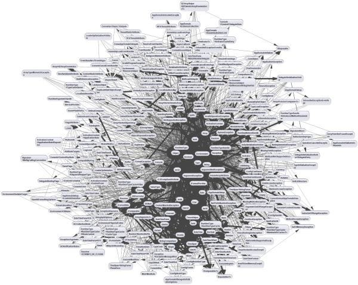
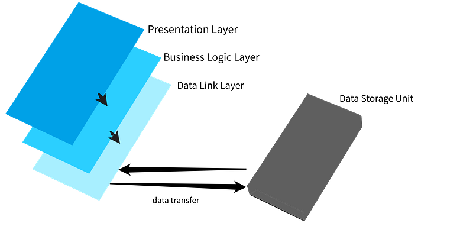
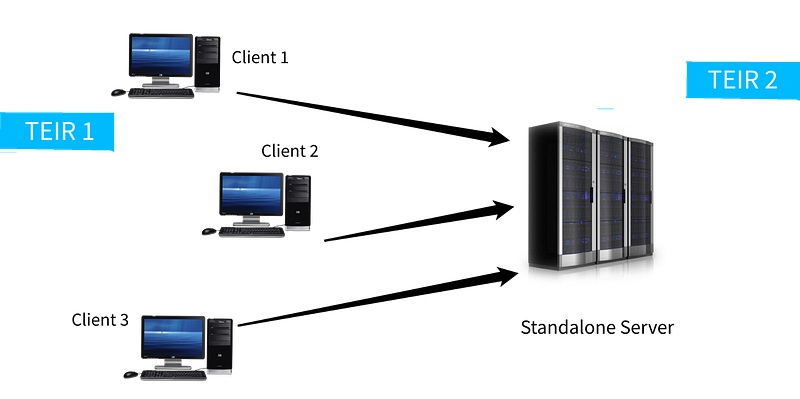
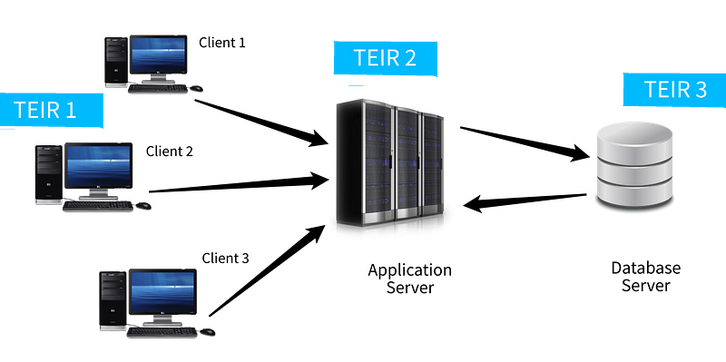
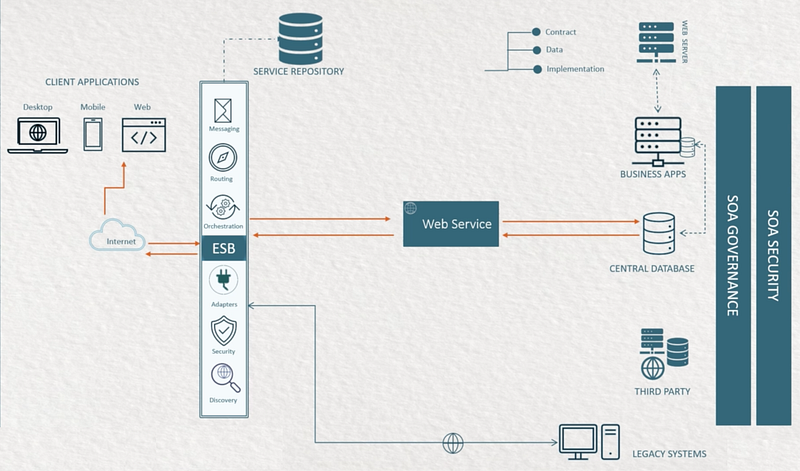
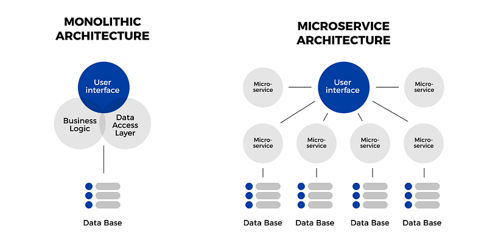
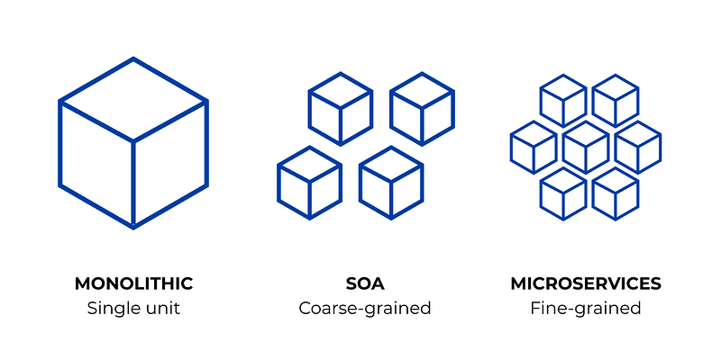

Software development can be described as a complex systemic process that requires expertise in various spheres of technology as well as the concerned business. An integral part of this software development process is facilitated by defining the architecture of software just like a blueprint of a master plan.
Why We Need Software Architecture

Earlier developers use to design architecture-less softwares which intially appears like an advantage of not having a planning overhead as well as faster protoyping. But as they dwell deeper into the process, the software becomes inflexible and unmanageable just like a mud ball. As each and every change becomes costlier, this approach was later termed as Big Ball of Mud
Such project becomes unmanageable with time and hence enhance the maintenance cost drastically with every new iteration. This restrict the software to evolve beyond the boundaries initially defined in the beginning of project.
Over the years of evolutions in software design, world of developers have come up with few robust architectural approaches in order to avoid the issues of architecture less software design (also known as Big Ball of Mud). Following are some of the most famous ones
- Layered Architecture
- Tiered Architecture
- Service Oriented Architecture (SOA)
- Microservice Architecture
Layered Architecture
This approach works on principle of separation of concerns. Software design is divided into layer laid over one another. Each layer performs a dedicated responsibility. Architecture divides the software into the following layers
- Presentation Layer
- Business Logic Layer
- Data Link Layer
Presentation Layer holds the user interface that interacts with the outside world. This is also responsible for providing user experience as this is the only layer exposed for interaction to the end user.
Business Logic Layer as the name suggest hold the business logic for the software application. This layer detach UI/UX from business related computations and hence provide a flexibility to modify the logic depending on constantly changing business requirements without having any affect on other layers.
Whereas Data Link Layer keeps the responsibility of interacting with persistent storage like databases and miscellaneous data processing which is not domain specific (ie. not related to the business)
Data and control flows from one layer to another crossing every layer in design. These layer also increase the degree of Abstraction in the design. As stability is proportional to abstraction to certain extent , it also improves stability of software to some limit.

Advantages
- Simpler to implement compared to other approaches
- Offers abstraction due to separation of concerns among layers
- Isolation between layers keeps other layers immune from the modifications in one layer
- Software becomes more manageable due to low coupling
Disadvantage
- Doesn't offer much scalability
- Software build with this approach will be inclined to have a monolyth structure lacking ease of modifications
- Data has to flow from each layer one after another even if its is unnecessary to pass from certain layers. This issue is termed as Sinkhole Problem
Tiered Architecture
This architectural approach divided the software suite into into tiers based on client server communication principle. Architecture can have one, two of n-tiered system separating the responsibilities among data provider and the consumer.
It utilises Request Response pattern for communication among the defined tiers. Unlike layered architecture, it offers scalability which can either be horizontal (scaling the network with high performance nodes) or vertical (scaling each node by increasing individual performance )
Single Tiered System
In this approach, single system is responsible to work as client as well as server and can offer ease of deployment eliminating the need of inter system communications (ISC). Hence, offers great communication speed.
Such system are suitable only for small scale single user application and should not be used for multi user complex applications.
2-Tiered System

Such system consist of two physical machines as server as well as client. It provides isolation among the data management operations and data processing and representation operations.
- Client holds Presentation, Business Logic and Data link layer.
- Server holds the Data stores such as Databases
3-Tiered / n-Tiered System

Such architectures are highly scalable both horizontally and vertically. Implementing n-tiered architecture is generally costlier but offer high performance. Hence it is preferred in large complex software solutions.
It can be combined with advanced service oriented architectural style to generate highly sophisticated model. It is recommended to use this architecture when the software is complex and requires performance as well as scaling as it can be a costlier approach in terms of resources as well as time.
Service Oriented Architecture
SOA is service based architecture model where components and applications comunicates using well defined services.
It comprise of the 5 elements namely
- Services
- Service Bus
- Service Repository
catalogue of services - SOA Security
- SOA Governance
Client sends a request using a standard protocol and data format through the network. This request handled by the ESB which can be considered as the heart of SOA. ESB holds the responsibility of orchestration and routing. ESB directs the request to a dedicated service using a service repository. This dedicated service may interact with other services or database to compose the response payload (response data).
Complete request response call is in compliance with SOA governance and security rule in order to fulfil the transaction ensuring security and correctness.

Services are generally classified as two types
- Atomic services : provides functionality which can not be decomposed further
- Composite services : an aggregate of multiple atmoic services to provide a complex composite functionality
Types of Services
Services can be of following types, namely
- Entity service
- Domain Service
- Utility Service
- Integrated Service
- Application Service
- Security Service
Microservices Architecture
By definition provided in the article written by Martin Fowler in 2014, Microservice architecture is described
In short, the microservice architectural style is an approach to developing a single application as a suite of small services, each running in its own process and communicating with lightweight mechanisms, often an HTTP resource API. These services are built around business capabilities and independently deployable by fully automated deployment machinery. There is a bare minimum of centralized management of these services, which may be written in different programming languages and use different data storage technologies.
It works on principle of componentization of services. This architecture decomposes the software into various components which can be defined as services. Each service holds a single responsibility and every service is isolated in nature. A change in one service should not affect the other services.

What microservices comprise
Architecture complise of isolated ,concise and fine grained micro services capable of expanding independently
Architecture consist of 5 component as follows
- Services
- Service Bus
- External configuration
- API Gateway
- Containers
Characteristics of Microservices
Microservice Architecture should comprise of the following characteristics
- Componentization via Services
- Organized around Business Capabilities
- Products not Projects
- Smart endpoints and dumb pipes
- Decentralized Governance
- Decentralized Data Management
- Infrastructure Automation
- Design for failure
- Evolutionary Design
It is recommended to evolve different microservices separately with different teams and allow each microservice to evolve with time simultaneously just like various bubbles in the air. As the data communication is done on a standard protocol and data format , structure of one service wont affect the functionality in co-services

Advantages
- Offers low coupling due to high degree of isolation
- Enhance modularity
- Failure in one service does not impact whole system as they are isolated
- Offers high flexibility
- Offers very high degree of scalability
- Ease of modification can result in faster evolutionary iterations
- Better error handling can be implemented
- Avoid Sinkhole Problem of layered architecture and data flows through concerned services only
Disadvantages
- Higher chance of failure during communication between different services.
- Difficult to manage a large number of services.
- Needs to solve the problem, such as network latency and load balancing and other issues similar to distributed architecture
- Complex testing over a distributed environment
- Implementation requires much more time
Conclusion
Each and every software architecture approach is designed with a motive of solving the prominent issues in the predecessor architecture. Having appropriate knowledge of different approaches can help you design an efficient software architecture for your project
“ Though there is no perfect software architecture in existence but any architectural approach can be considered relatively perfect if it fulfils the functional and non functional needs of the project “